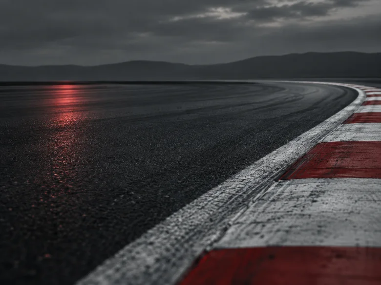

CT5 F1赛道试驾活动
CADILLAC
AUTOMOTIVE EVENT
3D VISUALIZATION
AUTOMOTIVE EVENT
3D VISUALIZATION
CT5 F1 TRACK DRIVE EVENT汽车活动 · 三维视觉
把赛道体验延伸进 P 房

入口先交代赛道场景，室内展陈再把视线收回到车辆和品牌画面，让试驾之外也有可以停下来看车的空间。
展车与观摩视角
室内展车与座席视角并看，可以读出近距离看车和坐下观看时的尺度变化。
项目影像
PROJECT
CT5 F1 赛道试驾活动
BRAND
CADILLAC
CATEGORY
AUTOMOTIVE EVENT
3D VISUALIZATION
3D VISUALIZATION